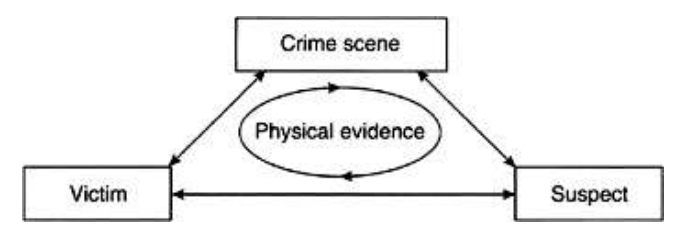

Principle of Exchange
• Every contact leaves a trace - Edmond Locard
• Whenever two objects come into contact with each other, there is always exhange of evidence even minute particules in between them
• Whenever criminal or weapon used for commission of crime, comes into contact of victim, trace evidence are left at that site
• In same way criminal or his weapons picked up trace from same contact
• Example
◇ In hit-run case, presence of blood stains in vehicle, presence of paint on victim clothes
